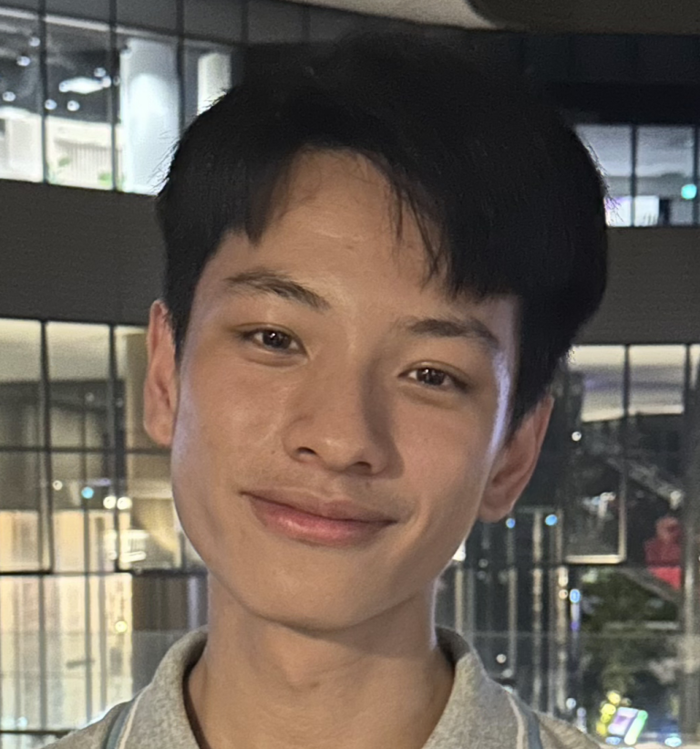
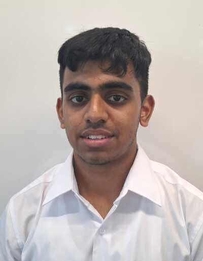

About Me
My work is driven by a fascination at the intersection of molecular, evolutionary, and developmental biology with the integration of machine learning. I aim to understand the development of novel morphological traits, the patterning of biological tissues, and the dissection of neural circuits.
Dual-Proficiency
What defines my research is a dual-proficiency in high-end wet-lab biology and engineering. I maintain large-scale colonies of model organisms and am skilled in:
- Molecular & Genomic: CRISPR-Cas9 editing, single-cell and bulk RNA-sequencing, qPCR, and tissue culture.
- Imaging & Spatial: Multiplex fluorescent in-situ hybridization (FISH), immunofluorescence, and laser capture microdissection.
- Engineering: Development of new tools for mRNA and protein level detection, agri-tech, object detection, robotics, and computer vision (working at both hardware and software levels).
Scientific Contribution & Impact
With over 9 years of experience, I have published research in premier peer-reviewed journals, including Science Advances, Science, Nature Ecology and Evolution, Communications Biology, Journal of Neuroscience, Development, Scientific Reports, iScience, Cell Reports, Frontiers in Ecology & Evolution, Methods & Protocols, Genomics, and Bioresource Technology.
I am also an active contributor to the global research community, serving as a reviewer for eLife, BMC Biology, BMC Research Notes, Annals of the Entomological Society of America, PLoS Genetics, Journal of Insect Physiology, Biology, Cells, Molecules, and Insect Sciences.
Leadership & Education
Academic mentorship is a core pillar of my career. I have mentored 4 graduate, 13 undergraduate, and 3 high school students at NUS, alongside teaching and assisting classes in the field of Evolutionary Developmental Biology (Evo-Devo).
Mentorship & Training
Undergraduate, graduate, and high-school students on projects spanning evo-devo, spatial transcriptomics, neurobiology, AI-driven image analysis, and experimental robotics.
Jeriel Lee
Research Assistant
Investigating the spatial-temporal expression of leg gap genes during the embryonic and larval wing development of Bicyclus anynana butterflies.

Javen Tan
Undergraduate student
Modeling reaction-diffusion based mechanisms patterning the wing veins of Bicyclus anynana.

Jaya Vardhan Harihar Prasad
High School Interns
Design and implementation of nanolitre scale microinjector for CRISPR-Cas9 injection on embryos.
Chan Sum Ngai Jeff
High School Interns
Design and implementation of nanolitre scale microinjector for CRISPR-Cas9 injection on embryos.

Gianella Pacho
Undergraduate student
Exploring FGF signaling in biological patterning using Bicyclus anynana.

Emily Zhang Linwan
Graduate student
Spatial transcriptomics of developing Bicyclus anynana brain.
Zhang Yu
Graduate student
Spatial interaction of frizzled receptors in patterning butterfly wing tissues.
How Hong Chuen Shaun
Undergraduate student
Vermilion and cinnabar are involved in ommochrome pigment biosynthesis in eyes but not wings of Bicyclus anynana butterflies

Lara Chal
Undergraduate student
Co-localization of multiple eyespot centre-specific mRNA and protein targets in larval wings of Bicyclus anynana.

Dorothy Lau Shi Min
Undergraduate student
Involvement of EGFR signaling in biological patterning of butterfly wings.

Jeff Winxin Collado
Undergraduate student
Implementation of automated fluidics system for in-situ hybridization experiments in the larval and adult brains of Danio rerio.

Teesha Basak
High School Interns
Designing an optimized autofeeder for behavioral experimentation in Zebrafish.

Tirunagari Praveenya
Undergraduate summer intern
The role of Homothorax (Hth) and Dachshund (Dac) in the eyespot center formation in Bicyclus anynana butterflies.

Lim Jun Hui Solomon
High School Interns
Reaction diffusion modeling on wing patterns of butterflies.

Isaac
High School Interns
Reaction diffusion modeling on wing patterns of butterflies.